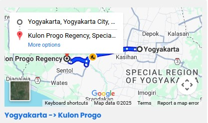
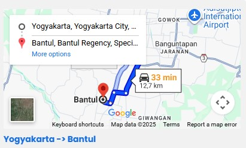
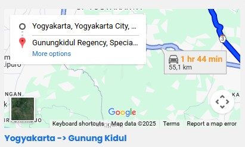
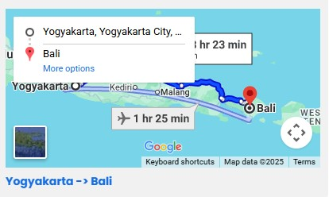
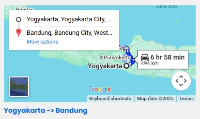

Bandara & Wisata
Kulon Progo
Yogyakarta - Kulon Progo
Rute praktis menuju area YIA, Kalibiru, Waduk Sermo, dan destinasi barat Yogyakarta.
Single Glass
Medium Long
Rute Perjalanan
Bimo Transport melayani perjalanan dalam kota, antar kota, hingga luar pulau dengan pengaturan rute yang menyesuaikan agenda rombongan.
Jawa
Rute utama harian dan wisata.
Bali
Trip rombongan lintas pulau.
Custom
Rute sesuai agenda Anda.
Mulai dari titik jemput, destinasi utama, makan, ibadah, sampai kepulangan bisa disusun dalam satu itinerary.
Rute Unggulan
Estimasi bersifat panduan awal. Tim kami akan menyesuaikan durasi dengan titik jemput, jumlah peserta, dan agenda perjalanan.

Rute praktis menuju area YIA, Kalibiru, Waduk Sermo, dan destinasi barat Yogyakarta.

Cocok untuk kunjungan singkat, outing sekolah, wisata kuliner, dan agenda lokal rombongan.

Rute favorit untuk wisata pantai, outbound, dan perjalanan santai dengan banyak titik singgah.

Perjalanan wisata besar dengan pengaturan istirahat, transit, dan destinasi yang lebih detail.

Pilihan untuk studi banding, family trip, dan perjalanan perusahaan dengan kabin lega.
Tentukan titik kumpul, jumlah peserta, dan waktu keberangkatan.
Tim menyesuaikan jalur, estimasi durasi, dan kebutuhan singgah.
Unit disesuaikan dengan kapasitas, jarak, dan karakter perjalanan.
Konsultasi Rute
Kirim jumlah peserta, tujuan, dan tanggal perjalanan. Tim kami bantu susun rekomendasi rute dan armada.